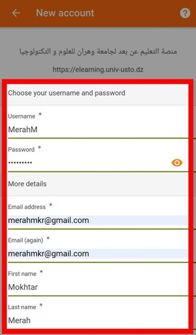
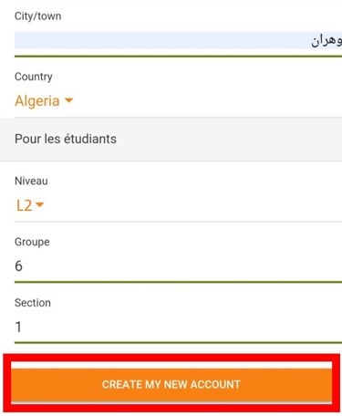
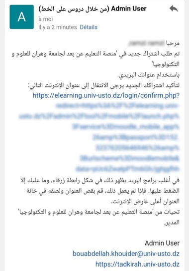
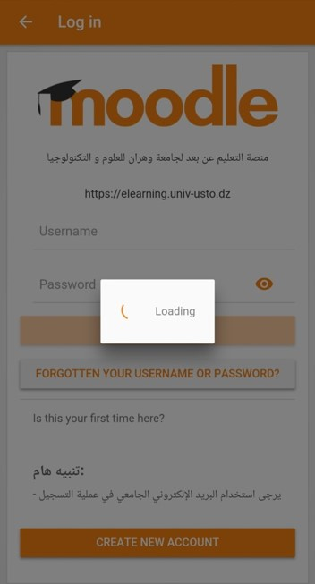
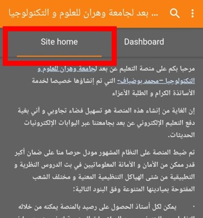
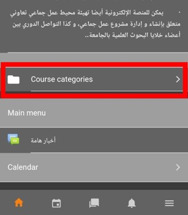

كيفية التسجيل في منصة الدراسة عن بعد الخاصة بجامعة العلوم والتكنولوجيا - وهران
استعمل الرابط المباشر بالأعلى للدخول إلى الموقع, أو من خلال الهاتف قم بتحميل تطبيق "moodle" الخاص بالنظام الذي تم ضبط الموقع عليه.
لأن التطبيق تعتمده عديد الجامعات عبر العالم.. فسيطلب منك تحديد عنوان "أو دومين" الجامعة الخاصة لذلك قم بادخال العنوان elearning.univ-usto.dz رقم (1)
ثم اضغط "Connect" رقم (2)
إذا كنت قد اشتركت في الموقع من قبل فيكفي ادخال اسم المستخدم وكلمة المرور فقط (1)
أما اذا لم تسجل بعد فاضغط على "Create new account" رقم (2)
هنا قم بادخال المعلومات المطلوبة منك.. ولكن يجب كتابة معلوماتك الحقيقية من اسم ولقب إضافة إلى المستوى ورقم المجموعة.
في حالة عدم ادخالك لمعلوماتك الحقيقية فسيتم حذفك من قبل مشرف الموقع الذي يتمتع بكل صلاحيات تسيير الموقع
بعد مراجعتك لمعلوماتك الشخصية اضغط على "Create my new account" لتأكيد تسجيلك بالمنصة.
 بعد تسجيلك بالمنصة ستظهر لك لافتة تطلب منك التوجه لبريدك الإلكتروني لتأكيد التسجيل.. بعد فتحك لبريدك الإلكتروني ستظهر لك رسالة التأكيد وكل ما عليك هو النقر مباشرة على الرابط الذي سيحولك إلى داخل التطبيق من جديد حيث سيقوم بتأكيد حسابك.
 الآن قد تم تسجيلك بنجاح في المنصة.. لمطالعة الدروس الموضوعة على الخط ماعليك إلا الضغط على "site home" ثم التوجه إلى الأسفل والضغط على "Course categories"
يتيح لك التطبيق عديد الخيارات منها "site blog" الذي يضع فيه بعض الأساتذة إعلانات وشروحات لدروسهم.. يمكنك تغيير الإعدادات وتفعيل الوضع الليلي.. قم بالتجول في التطبيق واكتشفها بنفسك..
 